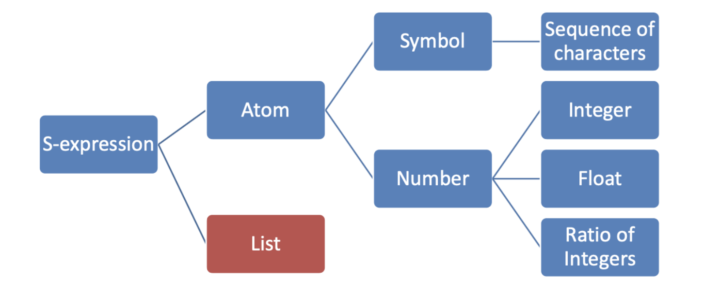

Functional Languages
- Lambda expressions describe nameless functions
- Applied to parameters by placing the parameters after the expression
- Ex: evaluates to 8
- Functional Form
- Higher order functions
- lambda expressions are also useful for creating functions to pass as parameters to other functions that expect to receive functions
- can return other functions
- Composition of Functions
- Takes two functions as input and returns a new function that is the result of the 1st function appleid to the second
- Ex: which means
- Higher order functions
- Inefficient execution on von neumann machines
- Simple syntax and semantics
- Programs written in funtional languages can automatically be made concurrent
- harder to write concurrent imperative languages
LISP
History
- Developed in 1958-59 for use in AI
- designed @ MIT by John McCarthy
- Fortran didnt have recursion, the ability to manipulate symbols, and ability to process data in linked lists rather than arrays
- Based on lambda calculus and mathematical functions
- Interpreted language with garbage collection
Data Types
- Originally only atoms and lists
- Type is bound at runtime
- Names not variables (can't change value of a name after it has been defined)
- list form- parenthesized collection of atoms and/or sublists
Interpretation
- function defintions, function applications, and data all have the same form
(A, B, C)can be interpretted differently depending on the contextAcan be a function being called with paramsBandCAcan be a function called onBevaluated atC- It can be a list of three atoms
A,B,C
Syntax

- a series of symbolic expressions (or S-expressions)
- can be an atom or a list
- an atom can be a number or a symbol
- a symbol can be a sequence of characters
- a number can be integers, floats, or ratio of integers (allows us to maintain accuracy with division)
- a list is recursively defined in termso of s-expressions
Grammar
- very simple grammar described by a short EBNF
<s_expression> -> <atomic_symbol>
| "(" <s_expression> "." <s_expression> ")"
| <list>
<list> -> "(" <s_expression>* ")"
<atomic_symbol> -> <letter> <atom_part>
<atom_part> -> empty | <letter> <atom_part> | <number> <atom_part>
<letter> -> "a" | "b" | ... | "z"
<number> -> "1" | "2" | ... | "9"
Semantics
- 1st s-expression in a list is the name of a function
- Ex:
(foo)or(foo a b c)
- Ex:
- in a function call, all arguments are evaluated first, then the function is applied to the result
- Prefix notation
Primitive/Numeric Functions
- true:
#Tor#t - false
#For#f =,>,<,<=,>=and,or,notequal?,even?,odd?,zero?,negative?,number?abs,sqrt,modulo,remainder,min,max,expt
Special Forms
- Functions that don't evaluate their arguments
lambda Expressions
- describe nameless/anonymous functions
- functions are first-class entities meaning they can be values of expressions, elements of lists, passed as parameters, and returned from functions
- functions can b
(lambda(x) (* x x))creates a special lambda function- can be called by:
((lambda(x) (* x x)) 8)
define
- 2 uses:
- bind a symbol to an expression:
(define pi 3.14) - bind names to lambda expressions (lambda is implicit):
(define (square x) (* x x))
- bind a symbol to an expression:
if
- two way selector function
(if predicate then_exp else_exp)
cond
(cond
[predicate1 expression1]
[predicate2 expression2]
...
[else expression])
- else clause is optional
- synonymous with
(#t expression)
- synonymous with
Lists
- Stored internally as singly-linked lists
quotefunction (abbreviated w/ apostrophe prefix operator) takes one param and returns the param without evaluation'(A B) <=> (quote (A B))
car- returns first element of its list parametercdr- returns the remainder of the list parameter after removing the 1st elementcons- add a new head to the front of a list- returns a new list with first argument inserted onto the front of the 2nd argument
- does not make copy of the second argument
list- returns a new list of its parameters(list 'a 'b 'c 'd)->'(a b c d)'
(list '(A B) '(C D))equivalent to(cons '(A B) (cons '(C D) '()))null?- tests for empty list(null? '())->#t(null? null)->#t
list?- tests if the function is a list(list? 'A)->#f(list? '(A))->#t
append- returns new list that contains all elements of the two list arguments- the arguments must be lists unlike
listandcons - different result from
listfunction(append '(a b) '(c d))
- the arguments must be lists unlike
- contractions are useful for doing a lot of work concisely
(cadr lst)equivalent to(car (cdr lst)(i.e. getting 2nd element)(cdddr lst)equivalent to(cdr (cdr (cdr lst)))(i.e. removing first 3 elements)
length- returns the length of a list- Lists are processed in a recursive fashion
- process head of list, recurse down rest of list, base case is empty list
- Deep Recursion- recurse the list and also recurse down any sublists
- the
equalfunction below is an example
- the
(define (equal list1 list2)
(cond
[(not (list? list1)) (eq? list1 list2)]
[(not (list? list2)) #f]
[(null? list1) (null? list2)]
[(null? list2) #f]
[(equal (car list1) (car list2)) (equal (cdr list1) (cdr list2))]
[else #f]))
Interpreter
- Infinite read-evalutate--print loop (REPL)
- similar to python and ruby
- parameters are evaluated in no particular order
- order of parameter evaluation doesn't matter since each function has no side-effects
- extensive use of parenthesis makes turning a program text into a parse tree very easy
- also no need for operator precedence
History
- LISP -> Scheme (70s) -> racket
- lisp also broke off into a more complex language CommonLisp
- Scheme
- cleaner, more modern, and simpler than contemporary dialects of scheme
- only static scoping
Local Bindings
- 4 ways to define local bindings (each w/ diff semantics):
let- expressions are all evaluated in the environment from before the let expressionlet*- expressions are evaluated in the environment produced from the previous bindings (can use bindings from previous expressions)letrec- used for recursiondefine- nested local defines are preferred racket style but don't have the emphasis in the distinction
- use the one most convenient, but default to
let - Let-expressions can appear anywhere
- Help avoid doing repeated work in functions
- let is shorthand for a lambda expression applied to a parameter
let ([alpha 7]) (5 alpha)equivalent to((lambda (alpha) (* 5 alpha)) 7)
Tail Recursion
- Recursion is the natural method of computation in functional languages
- Usually the overhead of function calls makes recursion slower than iteration
- Most functional languages can optimize tail recursive calls to make them as efficient as iteration
- C and Racket have tail recursion while python does not
- Tail Recursive Function- when there is nothing to do after the function returns except return its value
- Can be automatically converted by a compiler to use iteration (makes it faster)
Normal Factorial Recursive:
- Each call must wait for the result of calling itself in order to do the work of multiplying with n
(define (fact n)
(if (<= n 0) 1 (* n (fact (- n 1)))))
Factorial Tail Recursion:
- Each call's work is done once it calls itself again recursively
(define (fact n)
(define (helper n acc)
(if (<= n 0)
acc
(helper (- n 1)(* n acc))
))
(helper n 1)
)
Higher Order Functions
- A function that can take functions as parameters and/or return functions as results
- Map and reduce higher order functions form basis of MapReduce (Hadoop) for large scale computing tasks
Compose
- combines two functions into a new function
(define (g x) (* 3 x))
(define (f x) (+ 2 x))
(define h (compose f g))
(h 5) ; returns 17
- can be written as
(define (compose func1 func2) (lambda (x) (func1 (func2 (x))))
Filter
- takes a predicate function as its first param (often as lambda exp)
- returns a ist with those items from the param list that satisfy the predicate
(define (smaller100 x) (< x 100))
(filter smaller100 '(25 1 711 50 100))
; returns (25 1 50)
Map
- Takes two params- a function and a list(s)
- Applies the function to each element on the list and returns a list of the results
(define (map func lst)
(if (null? lst)
'()
(cons (fun (car lst)) (map fun (cdr lst)))))
- the
mapfunction provided by racket is more general and powerful(map fun lst1 lst2 .. lstn)
Foldr
- Combines all elements in a list by applying a binary operation
- Known as reduction or fold
(foldr f b '(x1 x2 ... xn))
; returns (f x1 (f x2 ... (f xn b) ...))
Thunks
- Delay the evaluation of an expression by wrapping it in a parameter-less function called a thunk
-
thunk- a zero aragument function used to delay evaluation
- captures th expression and environment in which it was defined
- calling the function later will evaluate the expression in its original environment
-
Eager Evaluation- In Racket, Java, & C function arguments are evaluated once before calling the function
- Haskell does not eagerly evaluate its arguments
-
Lazy Evaluation- for conditionals, the condition is eagerly evaluated but the branches are not
-
Example thunk:
(lambda () + 3 4)- calling the thunk:
((lambda () + 3 4))
- calling the thunk:
-
Helpful for delaying evaluation and/or avoiding repeated computations
- Delayed execution is used to improve performance in functional programming
Streams:
- infinite sequences of values where thunks are useful
-
can't generate all values ahead of time
-
we can generate the values as they are needed
- Key idea: use a thunk to delay creating most of the seuqunce
- Stream Producer knows how to create any number of values
- Stream consumer decides how many values to ask for
- Let a stream be a thunk that when called returns a pair:
'(next-answer . next-thunk)- Thunk always needs to be called using
() - get first element of stream
s:(car (s)) - next element:
(car ((cdr (s))))
- Thunk always needs to be called using
; Creates a stream of powers of two
(define power-of-two
(letrec ([f (lambda (x)
(cons
x
(lambda () (f (* x 2)))))])
(lambda () (f 2))))
(car (powers-of-two)) ; -> 2
(car ((cdr (powers-of-two)))) ; -> 4
; Function that takes a stream and int n and returns nth val of stream
(define (stream-nth s n)
(let ([pr (s)])
(if (zero? n)
(car pr)
(stream-nth (cdr pr) (- n 1)))))
(stream-nth powers-of-two 2)
eval function
- used in the REPL tp evalauate an expression
- the interpreter is a user available function
eval - allows you to write functions that build code
; lst is a list of numbers to be added
(define (adder lst)
(cond
[(null? lst) 0]
[else (eval (cons '+ lst))]))
; (cons '+ lst) creates list '(+ 1 2 3)
; which is then passed to eval where the list is treated as a function call (eval (+ 1 2 3))